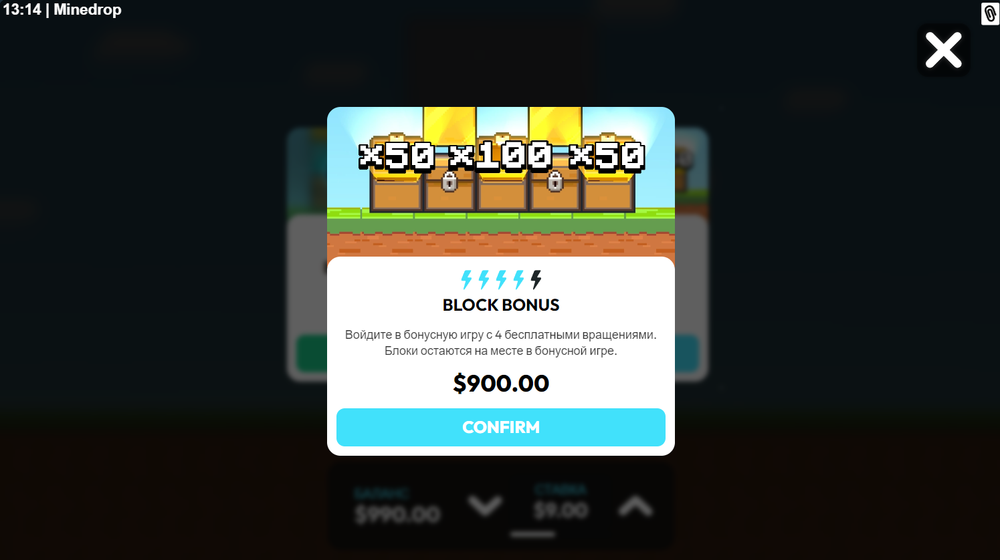

How to Play Mine Drop: понятный алгоритм старта
Запрос how to play mine drop чаще всего приходит от пользователей, которые уже открыли игру, но не понимают, как принимать решения в серии раундов. Важно помнить: цель первой сессии — не максимальная прибыль, а адаптация к темпу. В mine drop slot на результат влияет не только отдельный спин, но и последовательность ваших действий.

Пошаговый вход в mine drop game
- Откройте mine drop demo и сделайте разогрев 15-20 раундов.
- Выберите стабильный размер ставки, который не давит на банкролл.
- Определите лимит: по времени и по убытку.
- Переходите в real mode только при сохранении дисциплины.
Если вы сразу стартуете с агрессивной ставкой, легко потерять контроль над сессией. Лучше держать простой план: стабильная ставка, ограниченная длина серии, остановка после достижения лимита. Такой фундамент позже легко расширить в полноценную mine drop strategy. После изучения правил логично перейти на разделы про mine drop casino и бонусы, чтобы выбрать условия под ваш стиль игры.
Внутренние ссылки
FAQ
How to play mine drop без риска?Через demo-режим и заранее определенный лимит сессии.
Сколько должна длиться первая сессия?Обычно 20-30 минут достаточно для первичной оценки.
Можно ли часто менять ставку?Лучше избегать частых изменений без причины.
Когда переходить в онлайн на деньги?После устойчивого поведения в демо и четкого плана.
Где смотреть подходящее казино?На странице mine drop casino.